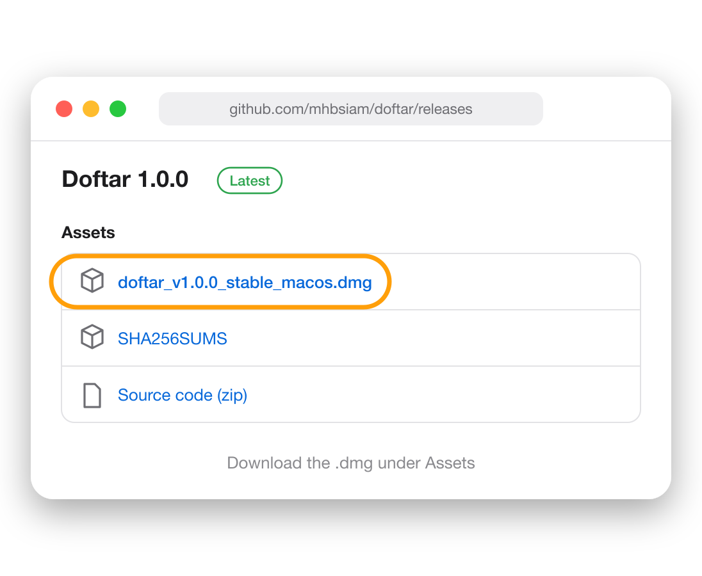
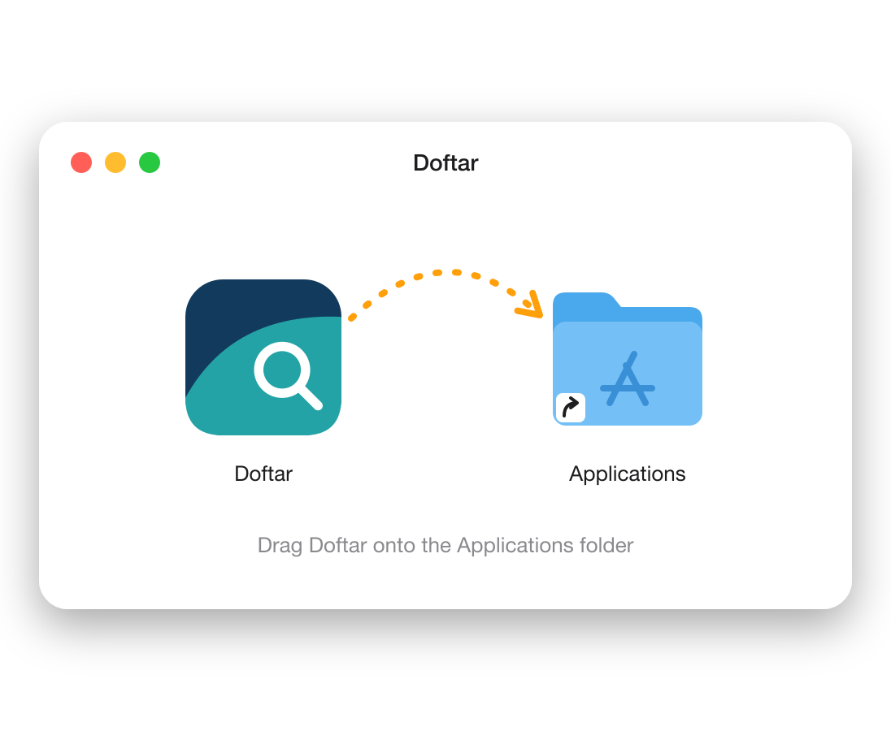
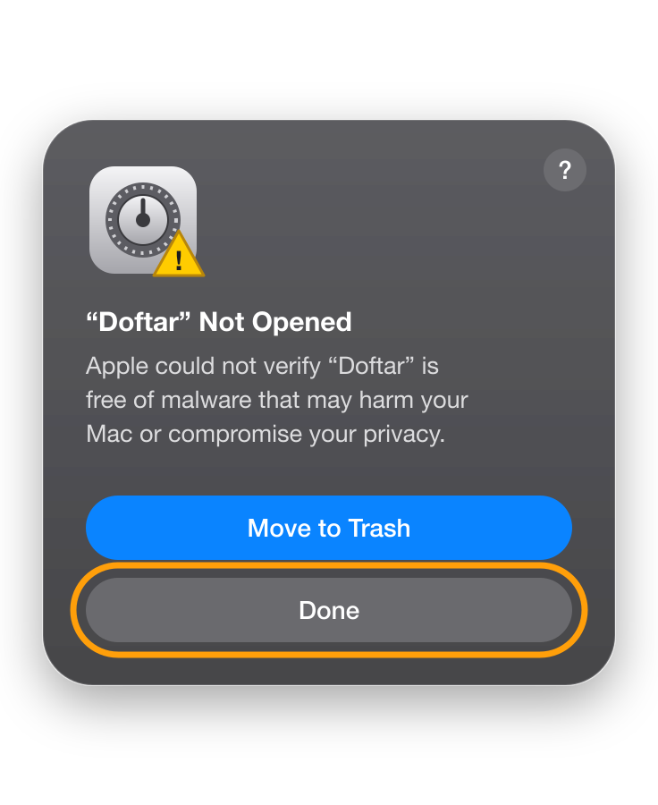
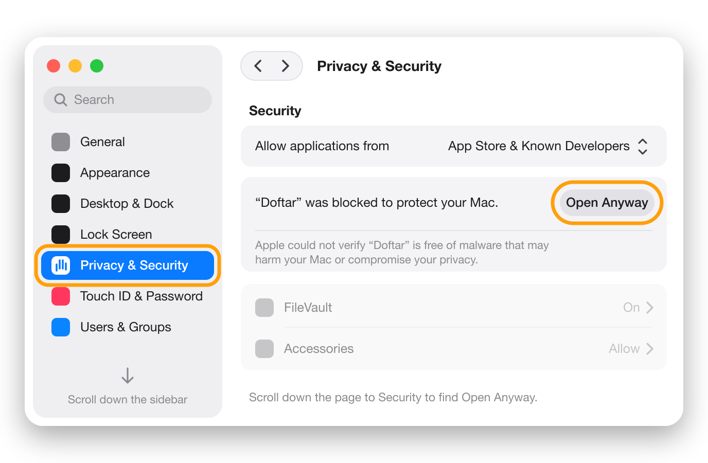
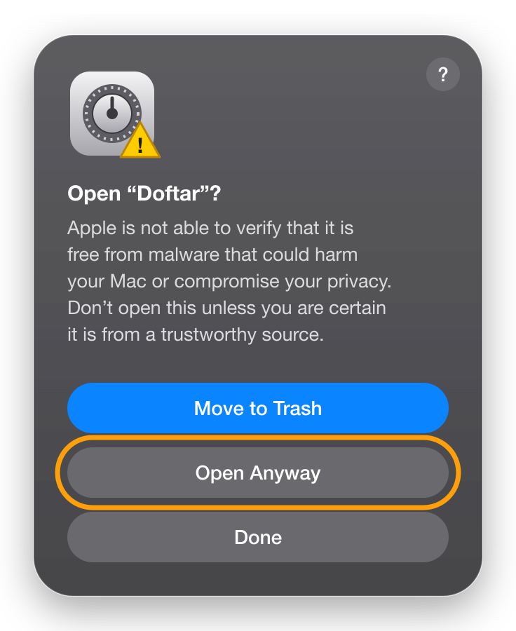
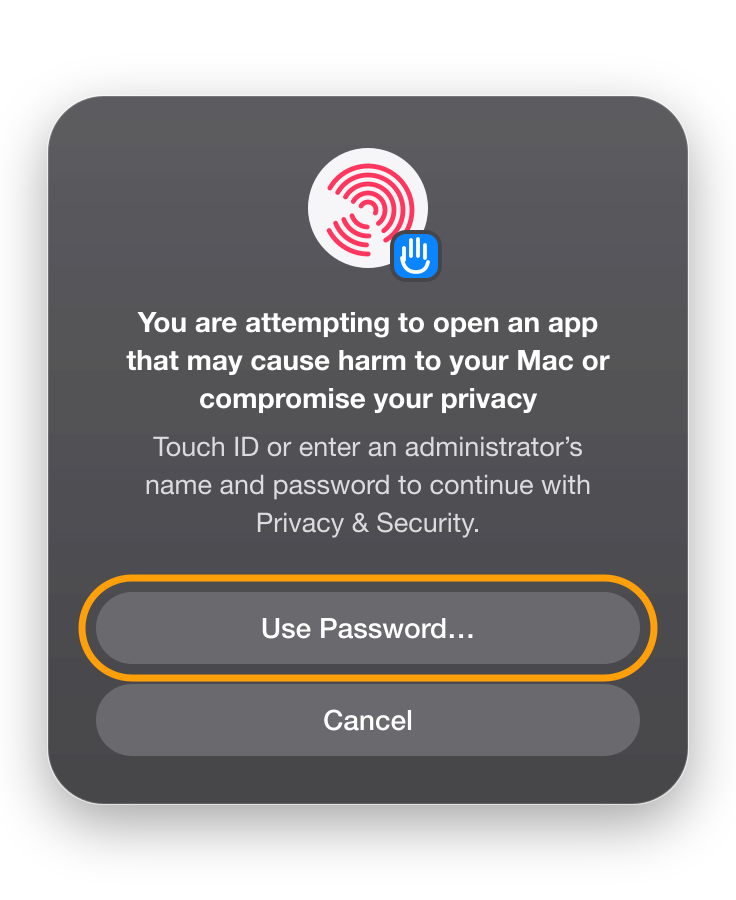

The file manager macOS forgot to ship.
Tabs, split view, an address bar you can type into and a folder tree with sizes, plus built-in viewers for Parquet, AnnData, SQLite, notebooks, PDFs and code. Free, open source, and blocked from the network.
Download for MacFree and open source. For Apple silicon Macs. Tested on macOS 27.
Doftar, screen by screen
-
HomeHome Open a folder to searchNew Copy Rename Cut Paste Delete Split Share Compare Sort View Filter ⌘Quick accessDesktop12 items · 48 MB Documents4,210 items · 25.5 GB Downloads318 items · 2.4 GB Movies41 items · 58.4 GB Music1,206 items · 9.6 GB Pictures2,874 items · 18.3 GBDrivesMacintosh HD31 GB free of 460 GBFavoritesClear allThesisOct 27, 2026 4:18 PM/Users/alex/Documents ProjectsOct 21, 2026 9:02 AM/Users/alex/DocumentsRecent foldersClear allProjectsOct 29, 2026 9:40 AM/Users/alex/Documents ThesisOct 29, 2026 9:12 AM/Users/alex/Documents LabOct 28, 2026 6:05 PM/Users/alex/Documents DocumentsOct 28, 2026 6:04 PM/Users/alex ApplicationsOct 28, 2026 2:51 PM/ DownloadsOct 27, 2026 11:30 AM/Users/alex
Everything in one window
Tabs, a breadcrumb address bar you can type into, and a navigation pane. Mac shortcuts work, and so do the Windows ones you already know.
-
ProjectsDocumentsProjectsNameDate modifiedSize atlasOct 27, 2026— field-notesOct 26, 2026— budget.xlsxOct 24, 202684 KB plan.mdOct 22, 20266 KB cover.pngOct 20, 20261.2 MB notes.txtOct 18, 20262 KBBackupBackup DriveProjectsNameDate modifiedSize atlasOct 27, 2026— field-notesCopying… plan.mdOct 22, 20266 KB notes.txtOct 18, 20262 KB
Two folders, side by side
Split view puts two folders in one window, each with its own tabs. Drag between them, or compare the two and copy what one side lacks.
-
LabNameDate modifiedSize experimentsOct 12, 2026— microscopySep 30, 2026— papersSep 02, 2026— README.mdNov 20, 20253 KB
See what's inside, with sizes
The folder tree lists everything in a folder, with sizes and size bars, so you can tell at a glance what takes the space. Press ⌘⇧E.
-
PicturesNameDate modifiedSize harbour.heicOct 14, 20262.8 MB sunset.heicOct 12, 20263.2 MB ridge.jpgOct 03, 20264.1 MB market.heicSep 21, 20262.5 MB trip.pdfSep 19, 2026880 KB
Look before you open
Select a file and the preview panel shows it, with where it lives, what made it and everything else it says about itself.
-
my-appcode . Search my-appNew Copy Rename Cut Paste Delete Split Share Compare Sort View Filter ⌘NameDate modifiedSize srcOct 30, 2026— testsOct 29, 2026— package.jsonOct 30, 20262 KB README.mdOct 21, 20266 KB tsconfig.jsonSep 14, 20261 KBRun this command? “code .” will run in Terminal in “my-app”. CancelRun
Type a command where you are
Type
code .,git pull,claudeor any other command into the address bar and press Enter. It runs in your terminal, in the folder you're looking at. -
DiskDisk usageMacintosh HD · 429 GB of 460 GB used · scanned just now
- Apps38 GB
- Images22 GB
- Video64 GB
- Audio6 GB
- Documents41 GB
- Archives12 GB
- Code30 GB
- Other18 GB
- System & other198 GB
- Free31 GB
Largest foldersFind what fills your disk
Disk usage scans your home folder and shows where the space went, by kind of file and by folder, down to the largest files and duplicate copies.
And a lot more
Things that need another app, or a Terminal command, in Finder.
Built-in viewers
Images, PDFs, Markdown, text and code, CSV tables, video and audio, without leaving Doftar.
Tabs and windows
Each tab keeps its own history. Drag one out into a new window, or onto another.
Search and filter
Type to filter the folder, press Enter to search subfolders, filter by kind and date.
Command palette
Every command a few keystrokes away, with a sheet of every shortcut.
Drag and drop
To and from Finder, Mail or a browser. Hover a folder or tab to open it.
Archives
Compress to ZIP. Extract zip, tar, 7-Zip, RAR, ISO and more.
Media details
Duration, codec, resolution and camera columns, and a shot list export.
Properties
Size on disk, permissions, camera and media details, and SHA-256 checksums.
Terminal
Open any folder in Terminal, iTerm2, Warp, Ghostty, WezTerm or Zentty.
Tags and screenshots
Pages that gather every file with a tag, or every screenshot you've taken.
Agent skills
Every
SKILL.mdacross your coding agents, on one page.Made to read
Folder colors, adjustable text size, AA contrast and 120 Hz on ProMotion.
What Finder leaves out
Finder does a lot well. These are the parts Doftar adds.
| Feature | Finder | Doftar |
|---|---|---|
| Two folders side by side | No | Yes |
| Compare two folders and copy what's missing | No | Yes |
| Cut and paste files with ⌘X | Partly⌥⌘V to move | Yes |
| An address bar you can type a path into | PartlyGo to Folder dialog | Yes |
| Folder tree with sizes | No | Yes |
| Disk usage by folder and kind | No | Yes |
| Undo history with an activity log | No | Yes |
| Batch rename with regex and numbering | PartlyNo regex | Yes |
| Summaries of AnnData, Parquet, SQLite and HDF5 | No | Yes |
| Edit text and code with syntax colors | No | Yes |
| Compare two files line by line | No | Yes |
| Git status on files | No | Yes |
| File checksums | No | Yes |
| Remove an app with its leftovers | No | Yes |
| Windows shortcuts (F2, Ctrl+C, Delete) | No | Yes |
Built to keep your files safe
Scripts and installers ask before they run. Files unzipped from a download are still checked by Gatekeeper. System and home folders can't be moved or deleted. And Doftar has no networking code. A sandbox blocks its main process from the network, and its built-in previews can't load anything from the web.
Install in a minute
Doftar isn't notarized yet, so macOS asks you to allow it once.
Download Doftar
1Download the DMGClick the .dmg under Assets on the release page.

2Drag to ApplicationsOpen the DMG and drag Doftar onto the Applications folder.

3Open Doftar, click DonemacOS can’t verify it yet. Click Done, not Move to Trash.

4Allow it in SettingsOpen System Settings, scroll the sidebar to Privacy & Security, then scroll down the page and click Open Anyway.

5ConfirmmacOS asks once more. Click Open Anyway.

6Touch ID or passwordUse Touch ID, or click Use Password… You only do this once.


Prefer Terminal? It skips Gatekeeper's check, so first verify the DMG with shasum -a 256 -c SHA256SUMS (from the same release), then run xattr -cr /Applications/Doftar.app.
দফতর
Doftar is a stylized spelling of doftor, Bengali for an office, borrowed from its Persian root daftar, a ledger where records were kept. Fitting, for a place that keeps your files.
It started as a weekend fix for everyday frustration with Finder.